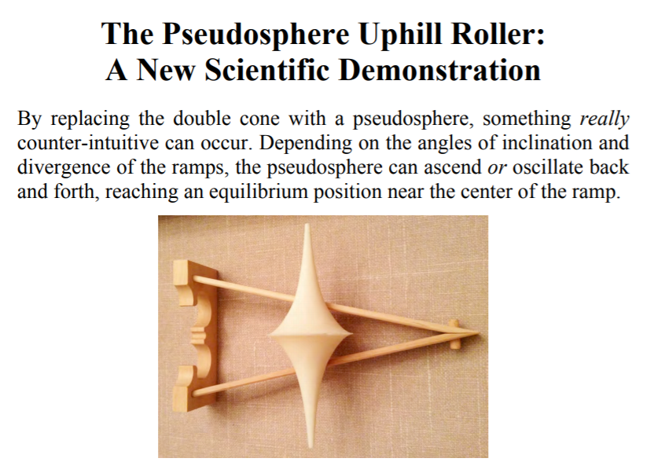
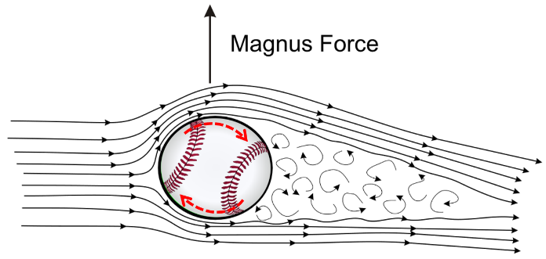
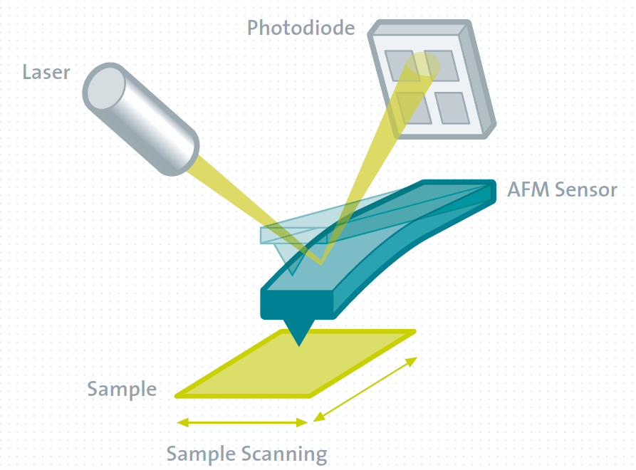
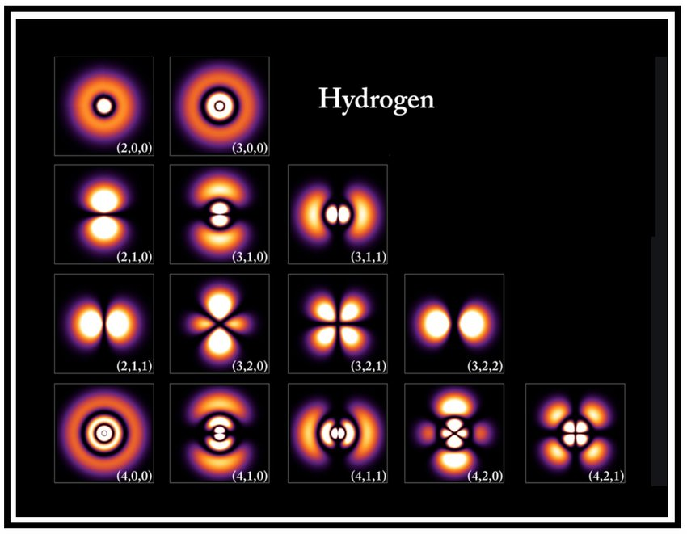
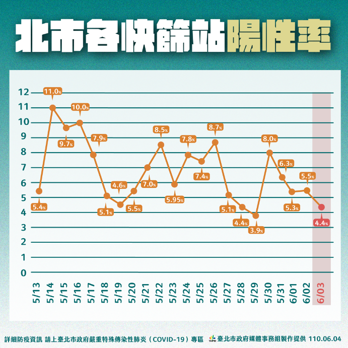

2021/12/31 , Physics

科學在不知道原理前一切就像魔術一樣，但是在解析背後的原理以後，看似不可能的都會馬上變得理所當然。今天來分享一個大家都曾經看到也困惑的現象，逆行滾動的雙錐，一個違反直覺的科學魔術。最後還有更令人訝異精彩的震盪雙錐，大家也別錯過！
2021/12/24 , Mathematics
一年一度的聖誕節又要到了，讓大家最期待的無非就是最精彩刺激的交換禮物了！儘管有時候會收到損友們送的垃圾會讓人心情十分不爽，但是交換禮物還是每年必玩的遊戲吧！每次的交換禮物大家都希望可以拿到別人準備的禮物才有刺激和新鮮感，但好像常常都會有倒楣鬼抽到自己的禮物。然而這不是錯覺，而是一個經過嚴格統計結果下來的必然現象！
2021/11/10 , Physics

Pitcher and batter combat is the most exciting moment during the baseball game. As a result, pitcher can make good use of breaking ball to confuse batter and weaken batter threat. Each kind of breaking ball has its distinctive trajectory, which is mainly caused by the airflow during flight. After analyzing the motion of the baseball, we find that drag force, gravity and Magnus force affect the ball’s trajectory dramatically.
2021/12/17 , Mathematics

不知道大家有沒有吃過新竹美食麥當勞呢?
麥當勞是從小到大的回憶，小時候往往只有考試考100分或是特別的日子才有機會可以吃到。在麥當勞當中最受大小朋友歡迎的無非就是酥嫩多汁的麥克雞塊了，然而麥克雞塊除了好吃以外，還有一個非常好玩的數學問題呢！
2020/7/23 , Mathematics

After a boring working day, you can’t wait to enjoy a wonderful weekend. Therefore, you invite your best friend and going to hold a party in your backyard. While you are going to cut the pizza and distribute to the guest, some quarrel begins in the crowd, arguing the size of the pizza slice isn’t equally. Since you can’t precisely cut through the center of the circle, perhaps you can’t divide the pizza equally…
2020/7/23 , Physics

AFM ，全名為Atomic Force Microscope即為所謂的原子力顯微鏡，顧名思義是利用力量(Force)來掃描樣品表面來成像，相較於一般的光學顯微鏡 (Optical Microscope) 是透過光與樣品表面交互作用後所反應出的光學對比來成像有所不同。光學顯微鏡因為受到光波動性的物理限制，所以在成像的極限最多到達~100nm，可見光無法在解析分辨更小的影像。因此我們為了觀察奈米級的結構，我們需要仰賴SEM、TEM、AFM等更高級的分析儀器，此文將更進一步介紹AFM的原理，並以物理的角度分析AFM運作的過程，使讀者更能了解AFM參數設定的原理，在閱讀機台量測後的數據理解以及機台參數設定上能更駕輕就熟。
2021/11/10 , Physics

不知道大家小時候最喜歡玩什麼呢，在我們那個年代還沒有智慧型手機，大家最喜歡玩的就是大富翁、撲克牌、拼圖的遊戲，那除了這些以外我最喜歡玩的就是疊疊樂這個遊戲了。
在一般的疊疊樂的玩法就是要輪流在交錯的積木中抽出積木，直到讓積木塔倒下的人就是輸家。而在抽積木的過程中除了要考慮積木的角度和摩擦力的大小更要考慮系統質心的位置改變，可說是一個看似簡單卻實質複雜的物理問題。
2021/11/10 , Mathematics

數學家們，發現了一件十分有趣的事情：他們發現這個向x軸方向無限延伸的喇叭結構其體積是個定值(即體積收斂)，然而其表面積卻是個無限值。這樣聽起來確實很怪，怎麼體積是個有現值，表面積卻可以無限的不斷放大?
2021/11/10 , Class notes

A detail derivation of schrodinger equation under spherical coordinate, which can obtain quantum number.
2021/11/10 , Mathematics

A detail derivation of schrodinger equation under spherical coordinate, which can obtain quantum number.